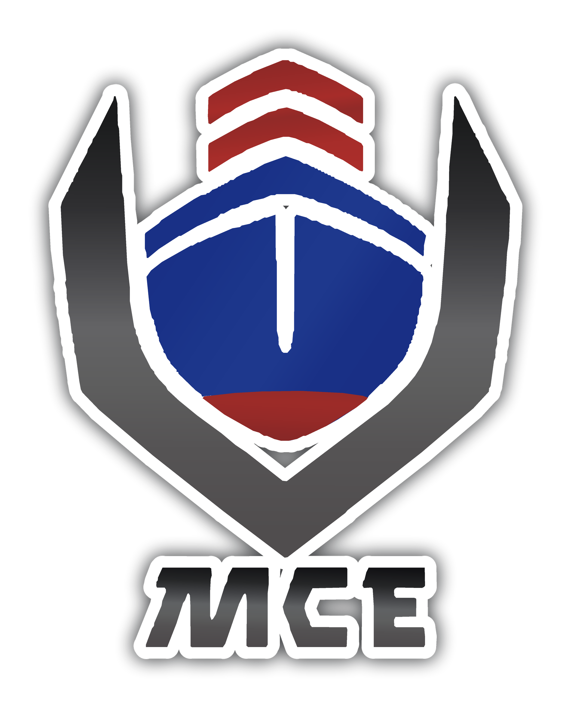

현장에서 검증된 설계
LNG선 Chief Engineer의 실무 경험을 프로그램에 담습니다.

Solution현장 엔지니어가 직접 만들고, 현장에서 검증한 선박 관리 솔루션. 선박 운영의 새로운 기준을 현장에서부터 다시 씁니다.

LNG선 Chief Engineer의 실무 경험을 프로그램에 담습니다.
반복 업무는 자동으로, 엔지니어는 본질적인 일에 집중합니다.
정비·교육 영상으로 현장의 노하우를 다음 세대에 전합니다.